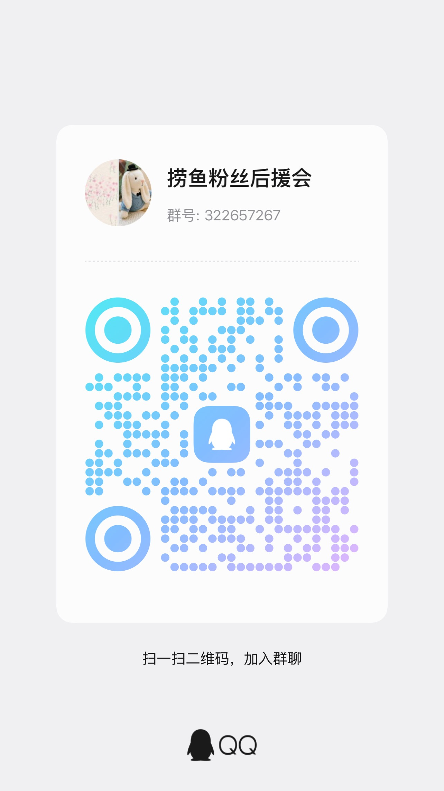

—
—
先查清问题，再做有依据的修复。
本机连接、DNS、网页与代理，会分别检查。
—
本机有 IP 不等于公网可用
默认不会自动修复或重启
正常代理和静态 IP 会保留。需要改动时先保存恢复点；修复失败会如实说明。
自己选择检查间隔。发现异常后尝试修复，超过 5 分钟默认停下，重启由你决定。
检查间隔由你选，修复超时后的动作也由你选。
发现故障后会立即修复，不必等下一次定期检查。
默认无动作：停止本轮修复，保留下次定期检查。
开启后自动打开网络工具，沿用已保存的保活设置。
读取授权状态中…
授权后，固定的网络修复动作不必每次弹密码框。你可以随时撤销。升级授权会停用已验证的旧版助手。
只读检查，不修改网络配置。
检查连接、路由、公网、DNS、HTTPS、代理、hosts 和防火墙。
只处理相关配置，失败会说明原因。
适合域名解析暂时异常。清除缓存，不更改 DNS 地址。
更改前保存原状态；新 DNS 无法解析时尝试恢复。
仅处理端口已失效的本机代理，正常代理和远端代理保留。
仅对已使用 DHCP 的普通网卡执行。静态 IP 不会被改为自动获取。
真实读取系统与网络结果，硬件不提供的指标会明确说明。
查看当前无线连接及信号信息。
通过 Cloudflare 下载测试，结果受线路与代理影响。
部分节点会屏蔽 ping；它不能单独证明整个公网断网。
先连接 VPN，再配置公司网段和域名。
「一个弱小但有梦想的开发者」

软件里的小伙伴，也是我们的原创表情。

如果帮到你了，欢迎支持继续做小工具。
免费、开源 · MIT License · 本地配置与脱敏日志 · 反馈仅在你提交时发送

欢迎加入捞鱼工作室 QQ 群，交流使用体验和新点子。